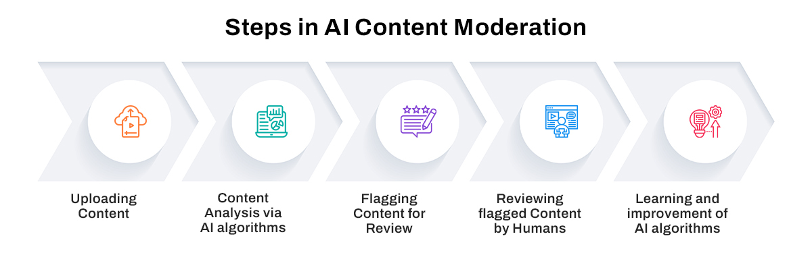
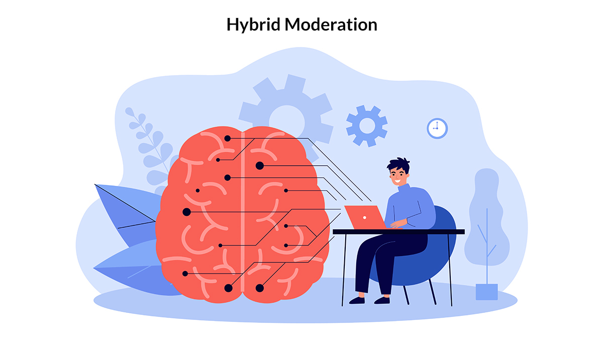

A Guide to Content Moderation: Benefits, Challenges & Best Approaches
 By Label Forge | 07 August, 2024 in Content Moderation | 7 mins read
By Label Forge | 07 August, 2024 in Content Moderation | 7 mins read
These days, users share massive amounts of content on various online platforms. This user-generated content (UGC) must be assessed and monitored via a screening procedure called content moderation to ensure it complies with established standards and guidelines.
The content moderation solutions market is expected to grow rapidly in the next few years. It will reach $19.93 billion in 2028 at a compound annual growth rate (CAGR) of 12.8%.
The growing amount of UGC from online platforms like social media posts, blog comments, product reviews, and others has made it challenging for humans to keep up with the manual moderation workload.
This has paved the way for streamlining the content moderation process through artificial intelligence (AI). Reading this blog will help you understand the best approach to content moderation and also the role of AI in ensuring your brand’s reputation.
Content Moderation: Meaning
Content moderation involves managing UGC on digital platforms. It ensures that the content (text, images, videos) complies with set guidelines and standards. It also plays a critical role in maintaining safe and respectful online environments.
Content moderation is the only technique for protecting users from harmful content, including hate speech, misinformation, and graphic images. It helps preserve the platform's integrity and ensures compliance with legal standards.
Content Moderation: Key Challenges
Online content generation has opened newer avenues for creating and consuming content. However, platform owners are left with the dilemma of moderating this colossal amount of content, along with other associated dilemmas highlighted below.
Volume and Scale of Data
The management of vast quantities of UGC is a big challenge. Platforms with millions or even billions of users have to parse through massive quantities of data, which adds to the difficulty of prompt identification and addressing of inappropriate content.
Content Diversity
Content moderators must be adept at comprehending and assessing diverse content to maintain consistency during enforcement.
Ambiguity in Context
Figuring out the context of the content is a complex task. The addition of sarcasm, humor, or cultural nuances may create misunderstandings, adding to the challenge of moderating content in an accurate manner.
New Technologies and Content Formats
The evolution of technology results in new content formats and distribution channels, making it difficult to moderate content and understand evolving trends on these platforms.
The balance between freedom of speech and safety
Platforms need to establish clear guidelines for striking the right balance between promoting freedom of speech and preventing the spread of harmful content.
Privacy Issues
The right balance needs to be struck between effective moderation and respecting users’ privacy by investigating UGC thoroughly.
AI Content Moderation: Significance
AI content moderation utilizes machine learning models to address key limitations posed by traditional methods. ML algorithms have automated the platform’s capability in detecting and removing inappropriate content, hence enhancing efficiency and limiting response time.
Before a post becomes visible to the public, an AI tool scans it to ensure compliance with the community guidelines. In the case of text moderation, the AI tool utilizes natural language processing and sentiment analysis to understand the context.
AI Content Moderation: Working
AI content moderation helps businesses manage their online platforms and preserve their brand image or reputation by filtering harmful or inappropriate content. The process has five steps.

1. Uploading of Content: Users upload content (text, images, and videos) on a website or platform.
2. Content analysis via AI algorithms: The uploaded content is analyzed using natural language processing, computer vision, and machine learning techniques.
3. Flagging content for review: Content is flagged as harmful or inappropriate by human moderators.
4. Human reviewers review flagged content: Human moderators carefully review flagged content to ensure compliance with community guidelines or legal standards. The content is examined in its context before deciding whether it should be approved, rejected, or escalated.
5. Learning by AI Algorithms: AI algorithms use feedback from human moderators to enhance their accuracy and effectiveness in identifying problematic content.
Content Moderation: Three Approaches
There are three primary approaches to content moderation: Manual Content Moderation, AI Content Moderation, and Hybrid Content Moderation, which combines AI and manual content moderation. Let’s examine each approach below.
Manual Content Moderation
This approach depends on hiring, training, and deploying human moderators to review and decide on content cases. Giant platforms generally outsource this task to contract employees, while small to medium platforms employ full-time moderators to review content.
AI Content Moderation
This approach leverages machine learning algorithms and AI technologies to filter, flag, and review UGC content that violates community guidelines or legal standards. It instantly and efficiently spots and eliminates problematic content, ranging from hate speech to spam to graphic violence, and helps maintain the platforms’ integrity and protect their users.
Hybrid Content Moderation
This blend of AI and manual content moderation. It involves automated tools to flag and prioritize specific content cases for human reviewers. Smaller and larger platforms use this to reduce the workload of human reviewers. In this case, a human makes the final decision.
Manual Content Moderation: Benefits & Challenges
The prime benefit of manual content moderation is that the content is reviewed at a higher abstraction level. Let’s look at the benefits and challenges of manual content moderation.

Benefits of Manual Content Moderation
Quality: Manual content moderation allows better control over your content moderation process. Moderators work with clients to update content according to their guidelines.
Control: Clients or businesses have complete control over what is said about them on social media.
Context: Humans can process content simultaneously to make correct evaluations. Hence, in each scenario, humans can outperform AI moderation systems.
Filter: Manual content moderation helps address and filter risky content while promoting content that enforces a positive brand image.
Mental health: Manual content moderators are exposed to a wide variety of content ranging from mild to disturbing, making it inevitable to put a mental health program in place.
Challenges of Manual Content Moderation
Costly: It’s an expensive exercise for companies to have round-the-clock content moderators as a lot of time and effort is invested in training and supervising them.
Setup: Companies are responsible for building their moderation processes, systems, and software.
Hiring: Companies are responsible for setting up their in-house moderation team by advertising, hiring, and training people.
Scale: Companies cannot scale up according to the volume of work, which can lead to lengthy and unforeseen delays.
AI Content Moderation: Benefits and Challenges
AI content moderation has the prime benefit of being less expensive, fast-paced, and consistent. Let’s look at the benefits and challenges of AI content moderation.
Benefits of AI Content Moderation
Speed: AI ensures vast volumes of content are handled efficiently, and platforms can be scaled as needed.
Consistency: AI ensures consistent application of content policies, limiting the risk of human error and uniformly enforcing community guidelines to ensure fairness and transparency in the content moderation process.
Real-time Detection: AI permits real-time detection of harmful content and quick response to maintain a safe and secure online environment.
Customization: AI models can be customized according to a platform’s unique content requirement. This ensures alignment with the platform's essential community standards.
Cost Reduction: AI content moderation significantly reduces costs, regardless of company size. It reduces the need for hiring and training in-house moderators or paying third-party moderating services based on volume.
Context: Multimodal AI algorithms help assess content in the same manner as a human moderator by simultaneously processing multiple contents. These multimodal capabilities are quickly gaining an edge over human advantage.
Challenges of AI Content Moderation
False Positives and Negatives: AI models might not correctly identify content, as they may violate policies (false positives) or simply fail to detect inappropriate content (false negatives).
Understanding the Context: Failure to comprehend context, humor, and nuances in content may lead to misinterpretations. This may result in the wrong flagging of contextually acceptable content and the non-detection of harmful content that utilizes sarcasm or cultural references.
Dynamically Evolving Content: The dynamic nature of the Internet makes it difficult for AI models to cope with evolving trends. Biases present in training data may be inherited by AI models, leading to unfair or discriminatory content moderation decisions.
Adversarial Attacks: These attacks can weigh down the efficacy of AI models, requiring constant vigilance and adaptation. Malicious actors may bypass AI filters by creating content that appears safe for humans but violates policies.
Resource-Intensive: Training and maintaining AI models requires considerable resources and expertise. Organizations with much smaller and limited resources might find it challenging to implement and sustain advanced AI-driven content moderation systems.
Hybrid Content Moderation: The Best Approach
Hybrid content moderation can be classified as a type of AI content moderation. It combines the best features of AI content moderation of fast and automated screening and manual content moderation of discerning judgment of human moderators.

AI content moderation tools filter out violations of content guidelines to manage large quantities of data efficiently. This helps reduce the volume of content that needs to be reviewed by humans. Human moderators then make judgment calls regarding complex, ambiguous cases with context and subtlety.
Facebook, a leading social media company, has a vast content moderation operation. The social media platform has over 2.38 billion monthly active users globally, owing to which its content moderation practices have a major impact on user expression.
Facebook deploys a hybrid content moderation approach, engaging in many phases of algorithmic and human review to identify and assess content that violates community standards. Automated tools review the primary layer of content on the platform. Based on the complexity and degree of judgment required, the content is passed on to human moderators.
While hybrid content moderation is excellent as it offers thorough and sensitive content moderation, it requires many resources and well-coordinated protocols for adequately delineating the roles of AI and human moderators.
Content Moderation Services: Outsourcing Tips
Businesses are increasingly outsourcing their content moderation services to scale their digital platforms without compromising user standards and brand reputation. Before outsourcing, companies must ensure the following:
1. Understanding business needs and analyzing the volume and complexity of content handled by your brand.
2. Evaluate a potential partner for handling content relevant to your industry by tracking their records in particular content areas.
3. The chosen content moderation service provider must be well-versed in using artificial intelligence and machine learning to enhance its ability to detect and act on inappropriate content promptly.
4. The content moderation service provider must analyze, review, and act on content without compromising turnaround time.
Choosing a content moderation service provider requires analyzing not only the cost but also the value they offer. Low-cost alternatives may seem great but can compromise service quality.
Conclusion
Effective content moderation techniques are crucial in maintaining a safe and secure online ecosystem. The judicious use of the three moderation approaches discussed above can help platforms identify and remove inappropriate content. As technology evolves, the balance between efficiency and human judgment will play a key role in content moderation strategies.
Given the complexity of handling large-scale content across online platforms, one must cautiously choose a content moderation partner to stay ahead in their content moderation strategy and navigate the tedious digital landscape.
please contact our expert.
Talk to an Expert →
You might be interested

- Content Moderation 23 Jun, 2021
Why Social Media Content Moderation is Vital for Businesses
Freedom of speech typically allows social media users to express their views on anyone and any possible topic without th
Read More →- Content Moderation 20 Apr, 2022
Things About Social Media Content Moderation You May Not Have Known
Making and enforcing rules on what may (and cannot) be posted on social media platforms is everything from impartial is
Read More →
- Content Moderation 21 Apr, 2023
Social Media Content Moderation: Protect Influencer’s Reputation and Increase Reach
We live in the digital era and have become increasingly dependent on social media for communication. There is a large nu
Read More →